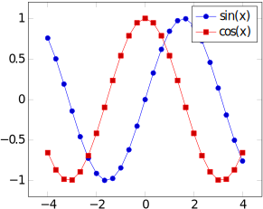

Por que utilizar LaTeX
LaTeX (lê-se: Latek) é uma ferramenta para criação de documentos, podendo ser:
- Apresentações de slides;
- Relatórios de trabalhos de aula;
- Artigos científicos;
- Livros;
- Provas.
E ainda mais. Tudo isso levando em conta uma ótima qualidade de tipografia, disposição dos elementos (evitando poluição visual, por exemplo), e outros fatores relacionados a estética.
É possível ler mais sobre LaTeX na página oficial do projeto.
Então, seguem alguns dos motivos para se utilizar LaTeX:
Qualidade tipográfica
Como mencionado anteriormente, LaTeX foca em ter uma qualidade tipográfica excelente. Um PDF gerado com a ferramenta dificilmente terá algum serrilhado, apresentará alguma deformação ou coisa do tipo. Isso se torna ainda melhor quando se tratam de expressões matemáticas, como por exemplo:
Essa expressão é criada utilizando:
\begin{equation}
\sigma_{prod}^{pA}(s) = \int_{0}^{\infty} 2\pi bdb
\left\lbrace
1 -
\left[
1 -
\frac{T_{A}(b)\sigma_{inel}^{NN}(s)}{A}
\right]
^{A}
\right\rbrace
\stackrel{A \gg 1}{\approx}
2\pi\int_{0}^{\infty} bdb
\left\lbrace
1 -
\exp\left[
-T_{A}(b)
\sigma_{inel}^{NN}(s)
\right]
\right\rbrace
\end{equation}
Qualidade para gráficos/diagramas
Se você precisa plotar dados ou desenhar diagramas, LaTeX disponibiliza componentes que são capazes de renderizá-los em alta qualidade. É possível, inclusive, descrever os diagramas utilizando o próprio LaTeX, podendo ser até Máquinas de Estado, ou mesmo gráficos 3D.
Um exemplo de plotagem de função:

Feita com:
\begin{tikzpicture}
\begin{axis}[domain=-4:4, legend]
\addplot {sin(deg(x))};
\addplot {cos(deg(x))};
\legend{
$\sin(x)$,
$\cos(x)$
}
\end{axis}
\end{tikzpicture}
Se preocupe com o conteúdo, não a formatação
Este é um ponto que serve para entender como utilizar LaTeX: diferente de programas como Microsoft Word ou Google Docs, a sua prioridade não será alterar os mínimos detalhes para a formatação de margens, posicionamento de imagens, etc., e sim com o conteúdo. Quem cuidará da formatação é o próprio LaTeX, o que inclui deixar seu documento nas normas da ABNT! Vale lembrar que quem cuida do projeto LaTeX são pessoas que entendem de tipografia, formatação e apresentação, ou seja: não irão deixar a desejar nesses quesitos.
Fácil gerenciamento de referências
Quem escreve documentos como artigos científicos sabe como referências são importantes e, em muitos casos, difícieis de administrar. BibTeX, uma ferramenta voltada a LaTeX, cuida delas automaticamente, bastando apenas fornecer as informações das referências (título, autor, ano de publicação...). E se a mesma referência for necessária em diferentes formatos (por exemplo, publicar para dois journals que cobram formatações de referência específicas), basta apenas especificar qual o formato, sem que se tenha que reescrever as referências.
Fácil de citar referências
Assim como é fácil gerenciar as referências, citá-las também é. Por exemplo, suponha que seu em seu projeto tenha a seguinte referência descrita com BibTeX:
@inproceedings{AwesomeAuthors:2018,
title = {"An awesome article about BibTeX"},
author = {"Mr. and Mrs. Awesome"},
year = 2018,
}
Em qualquer momento do texto, é possível citá-lo como:
Segundo~\cite{AwesomeAuthors:2018}, fazer citações LaTeX é maravilhoso.
Isso irá, dependendo do formato de citações escolhido (ABNT ou IEEE, por exemplo), colocar a citação corretamente. Se for um formato citações enumerado (ou seja, em vez de "(Autor, ano)" ser "[1]", "[2]", etc.), a enumeração é feita automaticamente.
Ferramentas e documentação
Para começar a utilizar LaTeX, você pode utilizar o Overleaf (uma espécie de Google Docs para LaTeX) ou editar a partir do seu próprio computador.
No caso do Overleaf, é questão de criar uma conta, criar um projeto e começar a brincar.
No caso do seu computador, é necessário:
- Instalar alguma distribuição LaTeX;
- Escrever um arquivo de .tex como arquivo principal do documento;
- Compilar para gerar o .pdf (ou corrigir os erros apontados pelo compilador).
Você pode checar a seção Editores nesta página para ver quais as possibilidades de aplicativos para editar LaTeX.
Distribuições
LaTeX vem em pacotes de ferramentas chamados de distribuições. Um resumo retirado da documentação do Overleaf:
- MiKTeX: para Windows;
- proTeXt: também para Windows, baseado no MiKTeX;
- TeX Live: para Linux e outros sistemas Unix (ex: BSD);
- MacTeX: redistribuição do TeX Live para MacOS.
Para usuários de Windows, a distribuição proTeXt já inclui o MiKTeX, bem como o editor TeXStudio, feito para LaTeX e outras ferramentas menores. O MikTeX sozinho tem pouco menos de 200MB, enquanto o proTeXt chega a mais de 1GB. Sendo assim, decidir entre um e outro é avaliar o tradeoff Armazenamento x Recursos.
Independente de sua decisão de distribuição, é bem provável que você vá querer ter o TeX Live, visto que é o mais ativo e preferido na comunidade, mas como instalar em outro SO que não seja Unix é com você, portanto recomendo deixar isso para mais tarde se parecer complicado e primeiro ter seu início no mundo LaTeX.
Compiladores
Se tratando de LaTeX, o compilador é um programa que irá pegar o seu código LaTeX e gerar o documento em questão. Existem alguns compiladores mais conhecidos, sendo eles:
-
latex: Compilador mais simples, porém aceita apenas imagens nos formatos .eps e .ps. -
pdfLaTeX: Suporta formatos mais comuns de imagem, como PNG, JPG, e mesmo outros PDFs.
-
XeLaTeX: Suporta, além das mesmas coisas que o pdfLaTeX, UTF-8 nativamente e permite utilizar fontes TTF e OTF.
-
LuaTex: Suporta, além das mesmas coisas que o XeLaTeX (com exceção de PostScript, uma linguagem feita para definição de layout de página para impressão - não significa que ela é obrigatória para gerar ou imprimir os PDFs), criar seus próprios comandos na linguagem Lua (em vez de LaTeX puro).
Mais informações sobre compiladores de LaTeX podem ser encontradas na documentação do Overleaf sobre compiladores
Editores
Documentos LaTeX nada mais são do que arquivos de texto, padronizados com a extensão ".tex". Então no fundo qualquer editor de texto serve, mas vale lembrar que vários editores oferecem recursos que facilitam sua vida.
Editores específicos:
-
Overleaf: Como apontado antes, é como um Google Docs para LaTeX. Funciona totalmente online, possui atalhos de teclado, compiladores, visualizador de PDF e etc. configurados prontamente sem que você precise fazer algo adicional. Pode ser ótimo para se aventurar com LaTeX sem se preocupar em adquirir ferramentas como TeX Live e semelhantes. Além disso, possui um sistema de colaboração em que várias pessoas podem editar o mesmo arquivo ao mesmo tempo. Também possui integração com repositórios do GitLab.

-
TeXStudio: Infelizmente não conheço do TeXStudio para dizer sobre ele, então sugiro ver a página oficial dele para mais detalhes. Se você já conhece o TeXStudio, sinta-se à vontade para fazer um Fork do repositório de tutoriais e enviar um Pull Request com suas alterações descrevendo melhor o editor.
Editores independentes:
- VisualStudio Code: Possui extensões para melhor uso de LaTeX, desde poder pré-visualizar seu documento e automatizar a compilação até destacar linhas com warnings e erros de compilação. Veja imagens e recursos na Página da extensão de LaTeX para VSCode
Documentação recomendada
Há duas recomendações de documentação para caso precise tirar dúvidas sobre LaTeX:
- As documentações do Overleaf (o que inclui um guia de como aprender LaTeX em 30 minutos);
- As documentações dos pacotes que for utilizar.
Nota: No caso do overleaf, perceba o índice à esquerda para ver que há vários conteúdos interessantes para iniciantes.
As documentações dos pacotes costumam ficar disponíveis em PDF no
CTAN. Por exemplo, se vier na documentação do
booktabs, poderá ver que a documentação
principal dele está disponível em 3 línguas diferentes (inglês, francês e
espanhol). São esses PDFs de documentação que você deverá ler na maioria das
vezes, que conterão toda a descrição do pacote, seus objetivos, e como fazer
cada coisa que eles disponibilizam.
Comunidade
Por fim, é interessante estar atento à comunidade LaTeX:
- A nível internacional, você pode postar suas dúvidas no LaTeX Stack Exchange, sempre obedecendo às regras da comunidade.
- Ou você pode aproveitar também as comunidades brasileiras, como o @latexbr no Telegram, sempre lembrando de ser receptivo e manter a ordem e bom convívio social.
Meu primeiro documento
Para começar bem no mundo LaTeX, arme-se com seu editor preferido pois iremos à prática.
Nestes tutoriais, o compilador utilizado será o XeLaTeX, mas você pode utilizar qualquer compilador que quiser.
Você pode compilar os arquivos .tex utilizando:
$ <seu compilador> <nome do arquivo>
Por exemplo, com o XeLaTeX:
$ xelatex arquivo-principal.tex
O que você verá neste capítulo
Este capítulo conterá um guia para você ter seu primeiro documento de exemplo pronto. Não será exatamente um documento para o fim que você utilizará LaTeX, mas servirá para você ir do início ao fim com um documento que tenha:
- Capa;
- Textos formatados;
- Pelo menos uma imagem;
- Referências bibliográficas.
O que irá ajudá-lo a entender como LaTeX funciona e, assim, poder utilizá-lo com maior segurança.
Partes práticas e resultado
Ao final de cada tópico haverá duas seções: "Prática" e "Resultado".
Prática: contém um passo a passo para você fazer em seu documento de exemplo, de forma a justamente praticar o que foi visto naquele tópico. Essas práticas não levam muito tempo para fazer, são justamente curtas para que você não perca tempo e veja o impacto dos recursos que aprendeu naquele tópico.
Resultado: contém imagens, em diferentes classes de documento, com o resultado
da parte prática, para você poder checar se ambas batem. OBS: Nem todas as
classes estarão lá, já que algumas alterações possuem o mesmo efeito para duas
classes diferentes, por exemplo as classes book e article.
Estrutura geral e classes
Arquivos LaTeX são organizados, em resumo, da seguinte forma:
- Classe do documento
- Preâmbulo (próximo tópico)
- Documento
Na classe do documento se define justamente que tipo de documento se trata. As classes principais são:
article: Apesar do nome, serve para documentos no geral (o que inclui também artigos científicos).book: Para livros;beamer: Para apresentações de slides.
Há várias outras classes que podem ser interessantes, dependendo do tipo de documento. Você pode checar algumas delas na introdução a LaTeX do Overleaf.
No documento fica o conteúdo do seu documento: todos os capítulos, parágrafos, tabelas, imagens, etc. Ao longo deste capítulo serão vistos vários comandos que podem ser utilizados nele.
Comandos e ambientes
Você irá perceber que LaTeX é composto majoritariamente de comandos e ambientes.
Por exemplo, \textbf{<texto>} é o comando para deixar um texto em negrito:
\textbf{Este trecho está em negrito.}
Já este outro trecho não.
O que irá gerar algo como:
Este trecho está em negrito. Já este outro não.
Ambientes podem ser utilizados com:
\begin{<ambiente>}
<conteúdo>
\end{<ambiente>}
Prática
Esboce seu primeiro documento seguindo os passos:
-
Escolha uma das classes de sua vontade;
-
Crie um arquivo de texto (em branco) chamado
main.tex(o nome pode ser qualquer um, na verdade, mas para fins de nos entendermos por aqui, o chamarei demain.tex); -
Nesse arquivo, escreva
\documentclass{<classe>}, trocando<classe>pela classe de documento escolhida. Por exemplo, para aarticle, seu documento será:\documentclass{article} -
Escreva alguma frase para o conteúdo do seu documento. O conteúdo do seu documento deve ficar entre uma linha contendo
\begin{document}e outra contendo\end{document}. Por exemplo:\begin{document} Texto de exemplo \end{document}Se você estiver utilizando
beamer, cada slide deve estar em um ambienteframe, portanto o código deve ser:\begin{document} \begin{frame} Texto de exemplo. \end{frame} \end{document}Você pode ainda aproveitar e colocar um título para esse
frame, da forma:\begin{document} \begin{frame}{Primeiro Frame} Texto de exemplo. \end{frame} \end{document} -
Utilize seu compilador para gerar o PDF a partir do
main.tex, por exemplo:$ xelatex main.tex
Tendo feito esses 5 passos, você agora terá um arquivo main.pdf. Abaixo
seguem tanto o código final de exemplo quanto os PDFs gerados quando utilizando
article e beamer.
Com article
\documentclass{article}
\begin{document}
Texto de exemplo
\end{document}

Com beamer
\documentclass{beamer}
\begin{document}
\begin{frame}{Primeiro Frame}
Texto de exemplo
\end{frame}
\end{document}

Preâmbulo: autor, título e data
Como visto no tópico anterior, o Preâmbulo é o que fica entre a definição da classe e o documento. Nele vão:
- Os pacotes utilizados (serão vistos mais à frente);
- (Re)Definição de comandos, ambientes e macros.
Macros são nomes que serão substituídos por algum conteúdo quando o seu
LaTeX for compilado. Algumas macros são, por exemplo, \title, \author e
\date, que representam respectivamente o título, autor e data do documento, e
podem ser definidas da seguinte forma:
\title{Título de exemplo}
\author{Autor exemplar}
\date{\today}
Perceba que em \date foi utilizada uma outra macro como o valor. Essa macro
contém o dia em que o documento foi compilado, portanto ela muda toda vez que
você compilar em dias diferentes. Caso você queira especificar uma data, basta
escrevê-la por extenso:
Essas três macros serão úteis, por exemplo, quando você utilizar comandos como
o \maketitle, que, dependendo do tipo de documento e das especificações dos
pacotes, gera a parte de título do seu documento. No caso de um livro, isso
significa a capa. No caso de um artigo, significa a área inicial dele que
contém título, autores e etc. No caso de apresentações de slides, significa o
slide de abertura/título.
Prática
- Insira, depois da definição do
\documentclass{...}e antes de\begin{document}, um título, autor e data apropriados para seu documento de exemplo. - Em seguida, no ambiente do conteúdo do documento, faça a primeira coisa (ou
seja, antes mesmo do seu texto de exemplo) ser o comando
\maketitle. - Por fim, compile e veja o resultado de seu documento.
Resultado
Com article
\documentclass{article}
\title{Aprendendo LaTeX}
\author{PET Computação}
\date{\today}
\begin{document}
\maketitle
Texto de exemplo
\end{document}
Com beamer
\documentclass{beamer}
\title{Aprendendo LaTeX}
\author{PET Computação}
\date{\today}
\begin{document}
\maketitle
\begin{frame}{Primeiro frame}
Texto de exemplo
\end{frame}
\end{document}